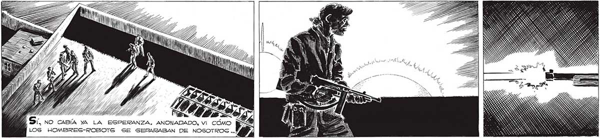
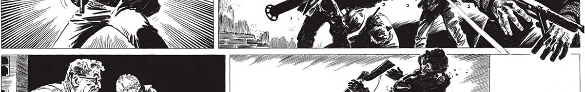

JE Y // y, Y, y A Y a Ss PE LL .-.NO ERAN HOMBRES, ERAN SIMPLES CUERPOS SIN INTELIGENCIA y ESCLAVIZADOS A LOS “NMANOS”. ADEMAS, NO ERA MOMENTO DE COMPASIONES... N Y ¿ÓN a - ” y k y ps ve, -y Ss a A A m7 s Y y > q za JA >> > JS y vi? AO o , E o mE p WN 2% Ñ 1 E "WAÁÍ 7 Y y A 5 SS ; Z 7 pS Y Ai Df . M m lim dr ¿ S ? DUDA > AA e == No FUE UN COMBATE. NI TIEMPO LE DIMOGS DE APUNTAR. PERO mW » a NO PENSABAMOS LO QUE HABIAMOS UECHO. TOTAL ELLOS YA... 281

